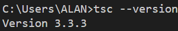
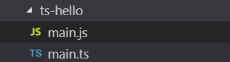
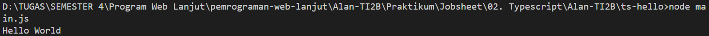
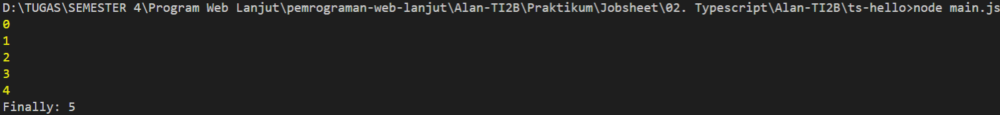

02.Typescript
Praktikum - Bagian 1: Instalasi Typescript
- Cara mengistal typescript dengan perintah berikut
npm install -g typescript. - Kemudian cek versinya menggunakan
tsc --version.

- Membuat folder ts-hello menggunakan
mkdir ts-hello. - Isi main.ts dengan code berikut:
function log(message) {
console.log(message);
}
let message = 'Hello World';
log(message);
Kemudian ketik perintah
tsc main.tsuntuk melakukan proses transpile file typescript kedalam javascript. Meng-execute file main js menggunakan
node main.js. 
Praktikum – Bagian 2: Declaring Variables
- Edit code file main.ts, menjadi seperti berikut:
function doSomething() {
for (let i = 0; i < 5; i++) {
console.log(i);
}
console.log('Finally: ' + i);
}
doSomething();
- Kemudian hapus file main.js menggunakan
del main.js(Command Prompt). - Kemudian transpile file main.ts menggunakan
tsc main.ts. - Jalankan file main.js menggunakan
node main.js. 
Praktikum – Bagian 3: Declaring Variables
- Buka file main.ts kemudian tulis code berikut:
let count = 5;
count = 'a';
- Transplie main.ts menggunakan
tsc main.ts. - Hasil dari pembenaran di file main.js
var count = 5;
count = 'a';
Praktikum - Bagian 4: Type Assertion
- Buka file main.ts kemudian tulis code berikut:
let pesan;
pesan = 'abc';
let percobaan = (<string>pesan).endsWith('c');
let alternative = (pesan as string).endsWith('c');
Praktikum - Bagian 5: Arrow Function
- Buka file main.ts kemudian tulis code berikut:
let log = function pesan() {
console.log(pesan);
}
let doLog = (pesan) => {
console.log(pesan);
}
let doLog1 = (pesan) => console.log(pesan);
Praktikum - Bagian 6: Interface
- Buka file main.ts kemudian tulis code berikut:
interface Point {
x:number;
y:number;
}
let drawPoint = (point:Point) => {
}
drawPoint ({
x:1;
y:3;
})
Praktikum - Bagian 7: Classes
- Buka file main.ts kemudian tulis code berikut:
class Pointku {
a:number;
b:number;
draw() {
}
getDistance(another:Pointku) {
}
}
Praktikum - Bagian 8: Objects
- Buka file main.ts kemudian tulis code berikut:
class Pointku1 {
a:number;
b:number;
draw() {
console.log('X' + this.a + ',Y' + this.b);
}
getDistance(another:Pointku1) {
}
}
let coins:Pointku1
coins.draw();